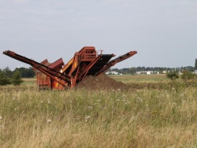

Schäden an Naturnestern
In der Natur treten immer wieder Schäden an Naturnestern verschiedener Arten auf, hier sollen äußerlich sichtbare besprochen werden, die sowohl von der Natur als auch vom Menschen verursacht werden können. Harmlose Schäden wie verformte oder abgetragene Waldameisenhügel aufgrund einer langen Schneeperiode im Winter können verheerend aussehen, sind jedoch recht häufig. Je nach Ausmaß eines solchen Schadens werden diese von der Kolonie in den Frühlingsmonaten großteils repariert. Durch Waldarbeiten oder Vandalismus zerstörte Nester der Untergattung Formica sensu stricto können weitaus schlimmere Folgen für die betroffenen Kolonien haben, je nach Ausmaß des Schadens. Ebenfalls durch Waldarbeiten stark gefährdete Naturnester stellen die der holzbewohnenden Arten dar. Durch Ackerbau und Landschaftsumgestaltung werden jedoch vermutlich weitaus mehr Kolonien beschädigt oder gar vernichtet als durch vorherig genannte Maßnahmen. Doch es gibt auch noch andere Schäden.
Per naturam
Die per naturam (zu deutsch durch die Natur) verursachten Schäden vor allem an Waldameisennestern der Untergattung Formica s. str. treten oft in eingedrückten sowie durch Schnee abgetragenen Hügeln oder durch Wildtiere stark in Mitleidenschaft gezogene Nestkomplexe diverser Arten in Erscheinung. Auch schwere Sturmböen, Überflutungen, Regenfall und weitere Naturerscheinungen können Ameisennestern in der Natur zusetzen. Je nach Umfang des Schadens ist diese Art an Schaden jedoch meist weniger folgenschwer für die Entwicklung der Kolonie als per hominem zugefügter Schaden, abhängig von dessen Ausmaß.
Wintereinwirkungen
_abgetragener_Formica-Hügel_(Bearbeitet).jpg.html){kind=link}
_abgetragener_Formica-Hügel1_(Gletscher)-Bearbeitet.jpg.html){kind=link}
Das erste Bild links zeigt einen Nestkomplex einer Formica cf. pratensis-Kolonie an einem Hang. Schwerer Schneefall von bis zu >50cm im vergangenen Winter hatten die Abtragung des im Vorjahr ca. 15-20cm hohen Hügels zur Folge, dessen Materialien (hier vorwiegend Kiefernadeln und dünne Zweige) als "gletscherartige" Zunge in Richtung Tal verteilt sind. Die Kolonie war bereits bei den ersten Sonnenstrahlen des Jahres damit beschäftigt diese Materialien wieder "zurück" zur ursprünglichen Stelle zu tragen. Zur besseren Anschauung ist das Exemplar bearbeitet, "grün" stellt den ursprünglichen Nestkomplex vor dem Winter dar, rot das abgetragene Material.
Die gleiche Sachlage findet sich deutlicher sichtbar auch bei der zweiten abgebildeten Kolonie, dieses Nest befindet sich kurz unter der Kante des Hügels und wurde von starken Schneeverwehungen begraben. Der zum Tal treibende Schnee hat vermutlich auch hier diese großen Mengen an Substrat bewegt, hinzu kam wahrscheinlich noch eine Überflutung des Gebiets, als es große Mengen Wasser auf den gefrorenen Boden regnete. Auch dieses Bildexemplar ist eine bearbeitete Version. Grün stellt den ursprünglichen Hügel rot das abgetragene Substrat dar. In diesem Fall ist links oben, sozusagen im "Nestursprung", eine Mulde zu sehen. Diese rührt von einem Lebewesen her, vermutlich Kinder, auf die in der Gegend einiges hinweist oder ein Tier.
Wintereinwirkungen, besonders sichtbar bei Waldameisennestern treten jedes Jahr auf und sind nicht weiter ungewöhnlich. Harte Winter mit viel Schneefall und langen Frostperioden, sowie starkem Regenfall auf gefrorenen Boden setzen besonders den Nestern der Waldameisen stark zu. Bei solch immensen Ausschwemmungen, deren abgetragene Substrate beinahe mehrere Meter einen Hang hinunter reicht, muss angenommen werden dass ein Großteil dieses Substrates nicht wieder eingetragen werden kann, bis die Vegetation wieder erwacht. Erfahrungsgemäß ist dieses schnell überwuchert. Enthaltene Ausscheidungen in diesem Substrat, die es besonders fruchtbar machen, beschleunigen den Prozess, den man auch von intakten Nestern zum Beispiel bei Formica pratensis kennt.
Überflutungen
Über die Auswirkungen von Hochwasser, Regenfall, oder durch übertretende Flüsse herbeigeführte Überflutungen bei Ameisenkolonien ist wenig bekannt. Unter "Überflutungen" wird ein mehrere Tage andauernder Wasserhochstand verstanden, der die Nesteingänge der Kolonie komplett unter Wasser setzt. Arten wie Formica fuscocinerea, die häufig an Flussufern oder in deren Nähe gefunden wird, scheint Überflutungen gewohnt zu sein und übersteht diese anscheinend relativ schadlos. Über Schäden an überirdischen Naturnestern in unseren Breiten die einer Überflutung aufgrund eines übertretenden Flusses ausgesetzt sind kann nur spekuliert werden. Berichte, im speziellen Bilderberichte, sind rar. Es ist anzunehmen, dass ein Großteil des Nestsubstrates fortgeschwemmt wird, was aber nicht weiter ins Gewicht fallen wird bei überfluteten Gangsystemen. Die in Australien heimische Ameisenart Polyrhachis sokolova ist an die Gezeiten des Meeres angepasst, und errichtet ihre Nester innerhalb der Gezeitenzone. Bei den regelmäßigen Überflutungen zieht sich die Kolonie in sogenannte "Lufttaschen" zurück, in denen die Kolonie die Flut verbringt. Ähnlich kann es sich auch bei einheimischen Arten verhalten, wissenschaftlich bewiesen ist das allerdings noch nicht.
Überflutungen aufgrund von heftigem Regenfall sind jedoch bedeutend häufiger und weitaus „habitatsunabhängiger“ als übertretende Flüsse. In Australien kann regelmäßig zu Begin der Regenzeit der ausgetrocknete Boden kaum Wasser aufnehmen und es kommt zu großflächigen Überflutungen. Es wird vermutet, dass ominöse Bauten diverser in solchen Gegenden heimischer Arten als "Überflutungsschutz" dient. Große mehrere Zentimeter hohe "Kamine" ragen aus dem Erdreich hervor. Die Wissenschaft ist sich noch nicht einig über ihre Funktion, jedoch schützen diese "Kamine" unübersehbar das Nest vor plötzlichem Eindringen von Wassermassen wie sie bei Überflutungen durch Regenfälle auftreten. Man kann sich vorstellen, dass Löcher, wie sie die Eingänge von solchen Nestern darstellen würden wie "Abflüsse" in der Landschaft wirken würden, was das Gangsystem fluten könnte.
Per hominem
Die per hominem (zu deutsch durch den Mensch) verursachten Schäden an Ameisennestern in der Natur können gewaltige Ausmaße erreichen und treten in den unterschiedlichste Erscheinungen auf. Beispielsweise werden durch Baumaßnahmen große Mengen an Erdreich bewegt und Flächen versiegelt. Es ist anzunehmen, dass ein "umfräsen" eines Ackers oder einer Wiese erhebliche Auswirkungen auf in diesem Substrat lebende Ameisenkolonien hat. Der Schaden kann erheblich sein. Auch bei Forstarbeiten werden jährlich viele Kolonien der geschützten Unterart Formica s. str. beschädigt, teilweise immens. Auch holzbewohnende Arten, deren "befallener" Lebensraum gefällt wird tragen dadurch erheblichen Schaden wenn nicht die Auslöschung der Kolonie davon. Auch Vandalen treiben oft ihr Unwesen an Ameisennestern, manchmal findet man Aufgegrabene Waldameisenhügel trotz Schutzzaun oder eingebohrte Stöcke in Hügeln, wie auch ausgebrannte halbtote Bäume. Oft schadet der Mensch durch sein Handeln Ameisenvölkern in der Natur auch indirekt durch ausbringen von Müll in der Natur.
Vandalismus
Oft werden die als "schädliches Ungeziefer" gesehenen Ameisen nicht mit großer Rücksicht bedacht. Viel mehr noch, in Zeitungen ist nicht selten von Schäden an Waldameisennestern zu lesen, die trotz Schutzvorrichtung auftreten. In diesem Zusammenhang fällt nicht selten das Wort Vandalismus. Wie viele Spaziergänger irren in der Vermutung die "Schutzvorrichtungen", wie es sie in einigen Bezirken um Formica sensu stricto -Nester herum gibt seien als Schutz vor Wildschweinen errichtet worden. Besonders in von Wegen einsehbaren Nestbereichen kommt es häufig zu Vandalismus, oft aus reiner Neugier. Je nach Ausmaß der Schäden können größere Kolonien diese wohl leicht verkraften, häufig staunt man über regelrecht "zerstörte" Nester wie ausgebrannte halbtote Bäume oder abgetragene Hügelkuppen. Solche Schäden können durchaus das Überleben des Volkes gefährden.
Baumaßnahmen
_Gefährdung.jpg.html){kind=link}

Baumaßnahmen jeglicher Art können direkt und in großem Maß in das Leben eines Ameisenvolkes eingreifen und teilweise brachiale Folgen über dieses bringen. Umwälzungen des Erdreiches auf Feldern, Abtragung der Erde beim Straßen oder Gabäudebau all dies beeinflusst das Ameisenvolk immens. Ob eine Kolonie in einem Garten eine "Fräsmaschine" überlebt ist unwahrscheinlich, geschützte Arten werden in Fällen von Baumaßnahmen notfalls von Vereinen wie der Deutschen Ameisenschutzwarte umgesiedelt. In Foren wird oft über von Baggern überrollte Formica-Nestern[1] berichtet. In einem Fall sogar über in Kiesgruben bedrohte Polyergus rufescens -Völker.[2] Es ist häufig zu beobachten dass solche schwer geschädigten Kolonien eingehen. Dies ist spätestens dann der Fall wenn das Volk durch massive Umwälzung des Erdreiches seine Königin/nen durch Isolation oder den Tod verliert.
Siehe auch
Weblinks
- Reisebericht über australische Ameisenarten mit Bildern von "Kaminen"
- Bilderbericht über Schäden an Formica sp. -Nestern im Freiland
- Umsiedlung bedrohter Polyregus rufescens-Völker (Bericht bebildert)